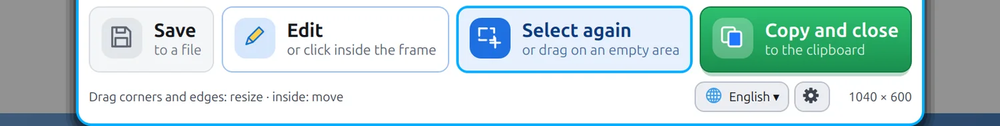
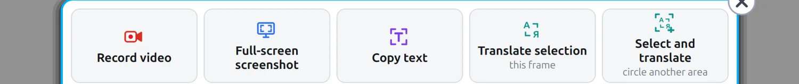
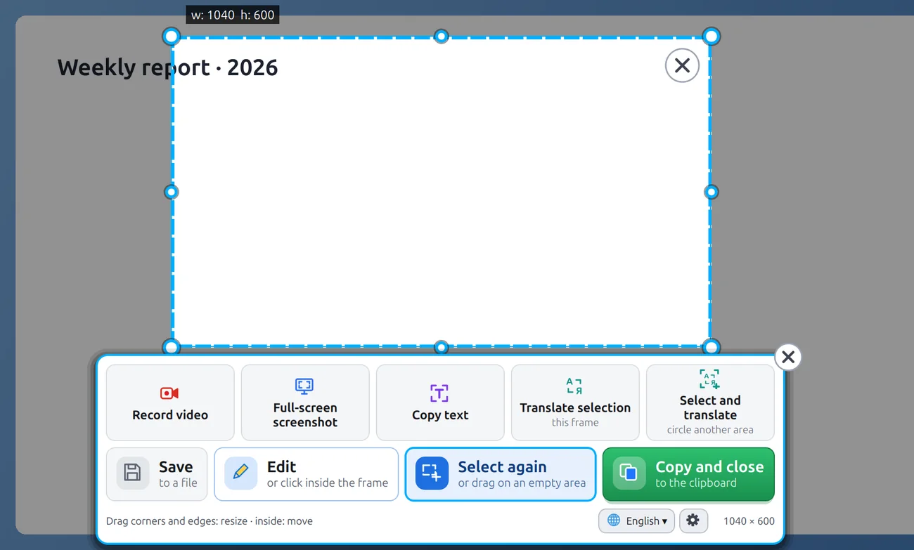
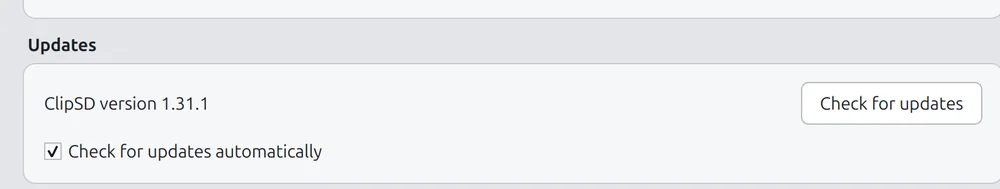
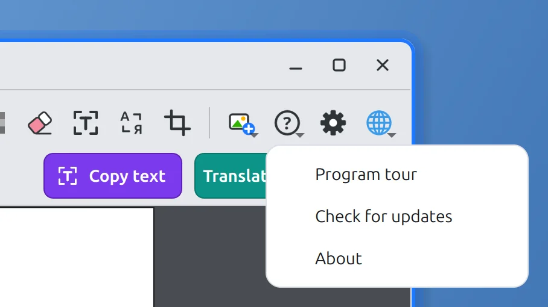
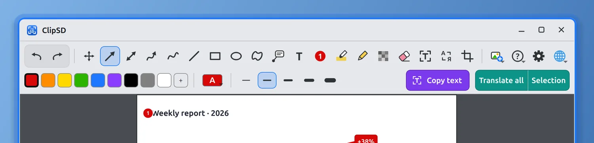
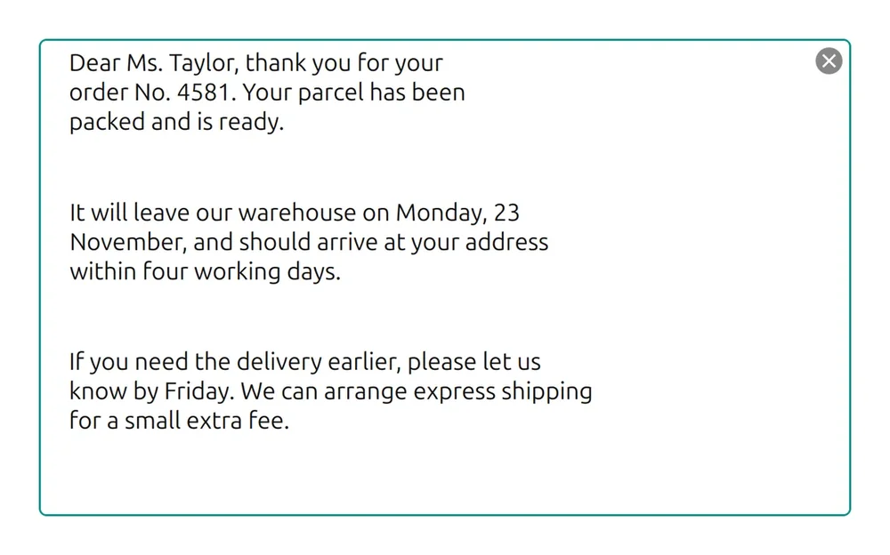
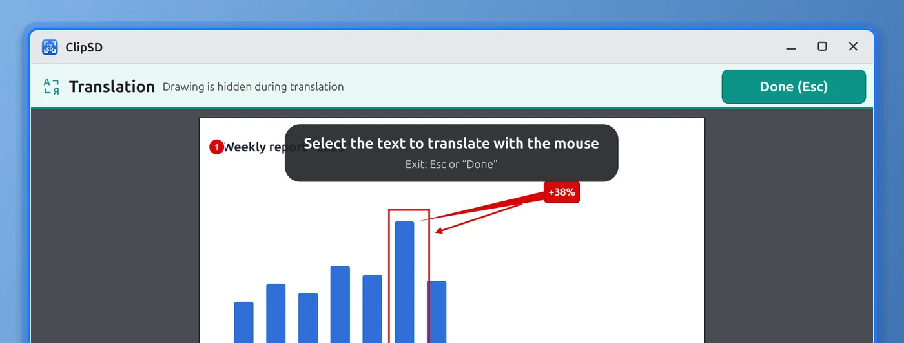

Version history
New versions appear first in the ClipSD Telegram channel (opens in a new tab).
Version 1.32.2
released
- Translating in pieces. The buttons of the translation window go to a free spot and do not cover the translated text or neighboring windows. A new piece does not land on a window that is already open. If there is no room for the buttons, the window keeps a cross in the corner, and the buttons appear when you hover the mouse over it.
- Translating the whole screen. Short lines, such as a tab title and an address, stay on one line.
- The “Copy text” button. On medium-sized screenshots the big button stays visible longer: “Translate all” goes first.
Version 1.32.1
released
- Redo in the editor. Ctrl+Y redoes an undone action again: on Windows the shortcut did nothing. Ctrl+Shift+Z works too.
- Rate ClipSD. The window after sending no longer stays on “Sending your rating…” once the rating has arrived. If you press Alt+W while rating, the review you typed is not lost: it comes back the next time you open the rating window.
- Urgent update. If the “Urgent ClipSD update” window was closed by a screenshot (Alt+W), it appears again once you are done with the screenshot, not a day later.
- Color of the selected object. Color and thickness of the selected object change for that object only. A hint appears under the palette: the “Keep drawing in this color” button keeps the new color for the next marks too.
- Custom colors. Colors picked with “+” are remembered as swatches before the “+” button. Up to three swatches are kept, and a right click removes one.
- Marker and pencil. If you start a stroke right at the edge of the previous one, a new stroke is drawn and the previous one does not move.
Version 1.32.0
released
- New editor. Tools are grouped (arrows and lines, shapes, labels, drawing and more). The “All tools” button shows all of them at once, together with their keys. For a narrow screenshot the editor window is narrow too: groups fold up, and every tool stays at hand.
- Right-click menu. The menu of a selected object no longer covers its frame and handles: it opens next to the object.
- Notifications bell. The editor has a bell, “Notifications”: a new version with the “Update” button, what's new in the installed version, and short messages from the program. A new version is announced by the bell first; the window offering the update appears later, if you haven't updated by then.
- Selection window tour. On your first screenshot the window shows step by step what the panel buttons do. To see it again, open the menu of the icon next to the clock: “Selection window tour”.
- Language names now have flags. A language chosen in the settings applies at once, without closing the window.
- Settings are split into sections. A list on the left (General, Screenshot, Editor, Text and translation, Updates, About) with search above it. The window remembers which section was open.
- Rate ClipSD. You can rate ClipSD from 1 to 5 stars and leave a review: the icon menu or “?” in the editor, “Rate ClipSD”. Now and then the program offers to rate it itself, but only when you are not taking a screenshot or working in the editor.
- Sharper screenshots on scaled displays. On scaled displays (125%, 150%, 200%) screenshots are sharper: the editor shows them without blur. On Linux, browsers and documents paste them at their original size, not stretched. In the settings, section “Screenshot”, you can choose the “Screenshot size”: full resolution or as on screen.
- A calmer look for windows. A calmer look and easier-to-read text: labels and buttons have more contrast, the main green button is darker, and the editor window has a thin frame by default.
- The About window. The “About” window now has the terms of use for the ClipSD name and icon and a link to news on Telegram.
Version 1.31.2
released
- Linux: updates install automatically again on newer systems (for example, Ubuntu 26.04). Previously, updates were downloaded but not installed.
- Linux: text recognition, links and autostart work again on newer systems.
- If an update fails to install, a window appears with the “Try again” and “Error report” buttons. The report does not include your username or paths to personal folders.
- After an update, the “What's new” window starts with “Update installed”.
Version 1.31.1
released
- You can now change the language and open Settings right in the area selection window: at the bottom of the panel, to the left of the size, there is a globe with the language name and a gear.

- Translation is split into two buttons: “Translate selection” translates the frame that is already there, and “Select and translate” lets you draw around another place. Translating the whole screen moved to the translation bar as the “Whole screen” button.

- The panel in the selection window is about 15% more compact and now sits next to the frame instead of covering it: below, above, to the right or to the left. It moves inside the frame only when there is no room outside.

- Settings has a new “Updates” section: the version, a “Check for updates” button and a checkbox for automatic checks. The “?” button in the editor now opens a menu: “Program tour”, “Check for updates” and “About”.


- In the editor, “Undo” and “Redo” are at the start of the row on their own background. By default the tools are arranged as: move, arrows together, then shapes, then the rest. An order you set yourself stays as it is; you can restore the new one with “Restore the default tool order”.

- The globe icon is light blue everywhere, so it is easier to find.
- Linux: fixed the first installation, which could silently stop halfway before.


Version 1.31.0
released
- ClipSD has 12 interface languages: Russian, English, Bulgarian, Ukrainian, German, French, Spanish, Italian, Portuguese, Polish, Turkish, and Chinese. You can change the language instantly without restarting ClipSD: from the tray icon menu, the globe in the editor, the first step of the tour, or Settings.

- A new panel in the area selection window provides full-screen screenshots, video recording, text copying, and translation at the top, with “Edit”, “Save”, and “Copy and close” at the bottom.

- Translate one section at a time: draw around an area to place the translation over its text, then draw around another area to translate that too. Press Esc to exit the mode.

- The editor modes “Copy text”, “Crop”, and “Translation” now have a bar at the top with a large exit button. Press Esc to return to the previous tool.

- ClipSD now updates itself. Once a day, it checks for a new version and offers “Update”, “Later”, or “Skip this version”. To check immediately, open the tray icon menu and select “Check for updates”. Updates are verified with a digital signature; if the new version fails to start, ClipSD restores the previous one.